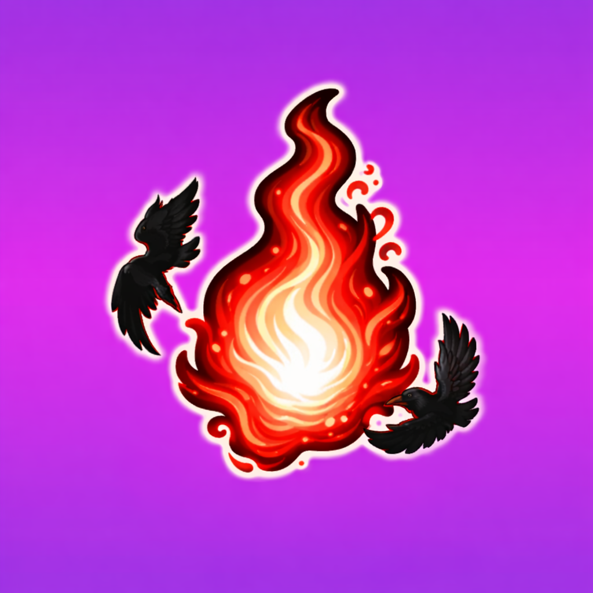

🦉 CROW'S CHAKRA FRAGMENT
EPIC
Obtained From
• The Fallen Crow
Used For
Crow's Chakra Fragment is used at the Blacksmith to upgrade:
- Crow Katana
- Crow's Mask
- Crow's Ninja Outfit

• The Fallen Crow
Crow's Chakra Fragment is used at the Blacksmith to upgrade: